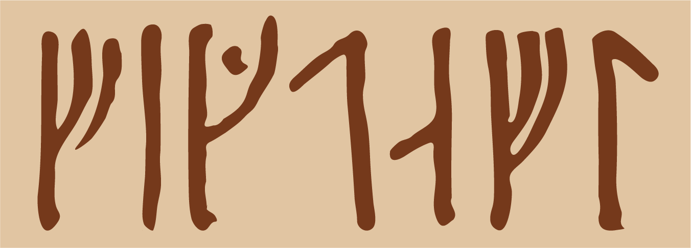
VigTavl ⚔ v0.9.5
A game of medieval combat.
The objective of the game is to be the player with the most victory tokens at the end of the game. Victory tokens are claimed in the following ways:
Anytime - Multiple possible
- Battle: For each Combat Unit that you defeat in battle collect a number of victory tokens equal to its value.
- Seize: For each Building that you sieze from another player collect a number of victory tokens equal to its value.
Bonus: Seizing an opponent's last Building grants the victor a 3 token bonus in addition to the value of the Building.
- Rescue: For each prisoner that you free collect a number of victory tokens equal to its value.
Once at the end (if a tie exists both players receive tokens)
- General: 3 tokens for the player with the most value of prisoners.
- Admiral: 3 tokens for the player with the most value of sunken ships.
- Emperor: 3 tokens for the player with the most value of buildings.
- Build the Map:
The size and geography of the map have a great effect on the game experience. Players are encouraged to be creative, and build the map however they like. However the following are some guidelines that help ensure an even distribution and balanced layout, as well as some recommended examples for new players.
Mountains: Mountains can be used to great effect defensively, and can greatly increase the potential size of a player's citadel. It is very important that the number of mountains on the map be balanced and spread out. Too many mountains in one area will make that area too defensible and unless all players have access to a similar configuration of mountains, it could easily be too advantageous to a single player.
Border: Any land hexes adjacent to the edge of the map are equivalent to being bordered by mountains, since opponents can not attack from the deep sea beyond the edge of the map. Additionally, these hexes tend to be the furthest away from all other players, making them very defensible. To ensure a well balanced map, the border hexes on each edge of the map should be mostly, if not all, sea hexes.
Size:
2 players - 6 hex edges
3 players - 7 hex edges
4 players - 8 hex edges
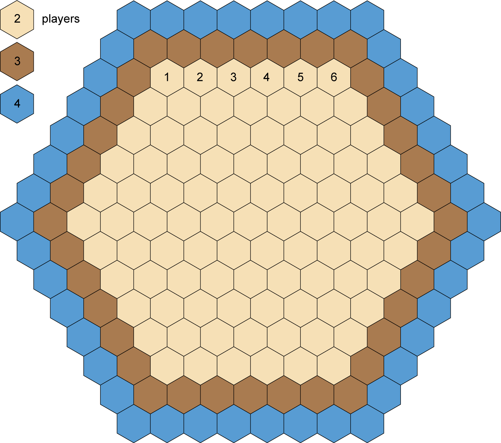
2 player map example:
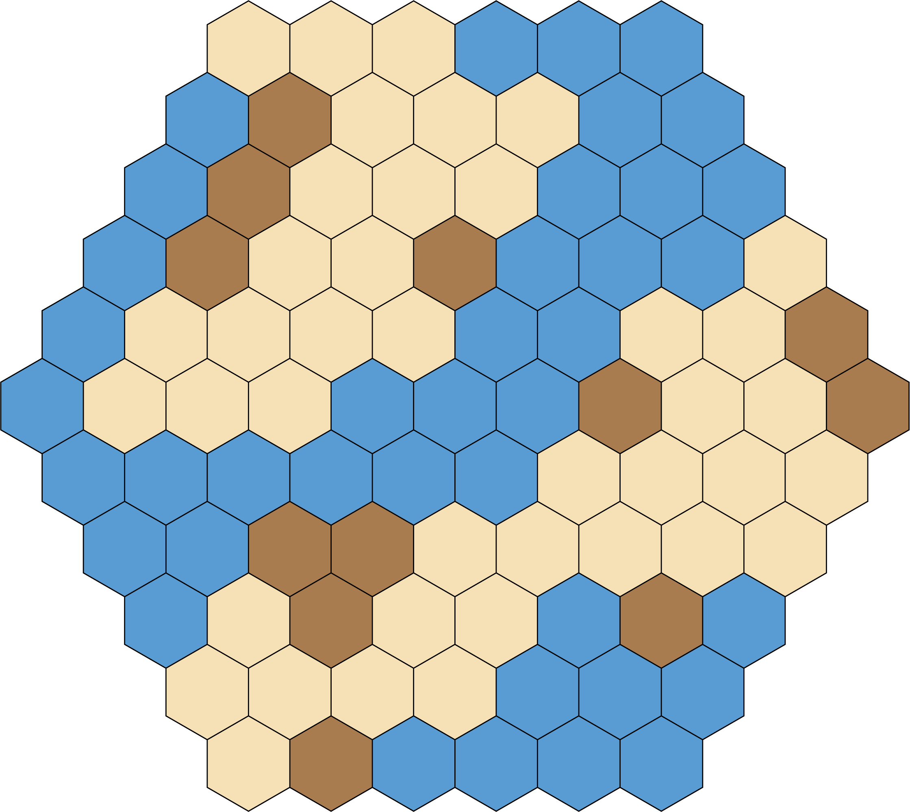
3 player map example:
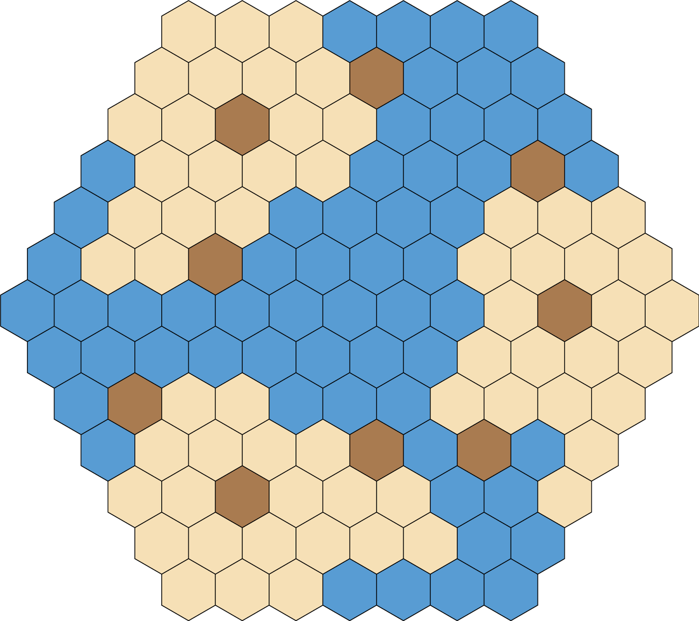
4 player map example:
- Starting Units: Each player begins the game with the following units:
3 infantry, 2 archers, 1 cavalry
3 caravels, 2 longships, 1 galleon
3 camps, 2 forts, 1 castle
9 walls
1 artillery
- Prevailing Winds: Determine the direction of prevailing by flipping the Prevailing Winds Token. Place it in the center of the map.
- Turn Order: Randomly determine which player will go first. Turn order is the opposite direction of Prevailing Winds for the remainder of the game.
- You are now ready to begin the game.
The game consists of 2 phases.
- Phase 1 - Build:
In turn order, players place their starting units on the map, one at a time.
Continue until all starting units have been placed.
- Phase 2 - Battle:
Players may Recruit new combat units and / or Activate existing units.
Players may not build additional camps, forts, castles nor walls.
See Artillery section for special rules
A round is defined as one revolution of player turns around the table.
At the beginning of each Round every player resets to 3 gold and 5 silver. Any un-spent gold and silver remaining from the previous round is discarded.
- In any order, do one of the following:
- Repeat until player has no more gold or silver or voluntarily ends his turn.
- Resolve any triggered Retaliation
Gold is used to Recruit new combat units.
Silver is used to Activate combat units.
The geography of the map is important to consider in developing your military tactics and strategies:
- Mountains: Steep, rocky and treacherous, mountain hexes can not be occupied or built on.
- Land: This is where all building and land battles will take place.
- Sea: Sea hexes are where your naval maneuvering and battles will take place.
The sea beyond the border of the map is the deep, open ocean, where strong, prevailing winds can greatly enhance a sea-worthy sailor's ability to travel long distances.
When ships move out into the deep sea, they may take advantage of the prevailing winds to travel from one edge of the map to the next adjacent edge in addition to each ship's normal movement range. Though they must travel in the same direction as the prevailing winds, which are either clockwise or counter-clockwise around the map.
Player's ships may enter the prevailing winds from any border sea hex, and exit into any border sea hex on the next edge of the map.
In this example, the caravel is able to move into the prevailing winds and sail around the penninsula because the winds are clockwise and it has a movement range of 6.
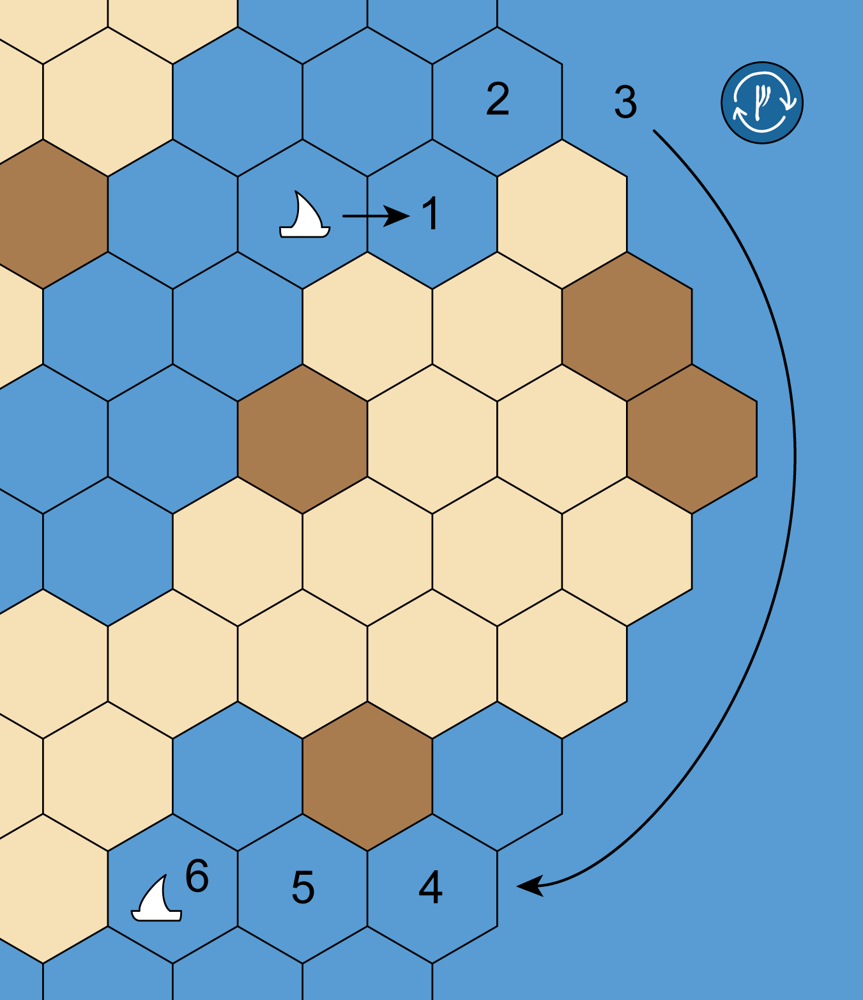
Ships may not end their movement in the deep ocean. Ships must use 1 movement to enter prevailing winds and 1 movement to exit. If a ship does not have 2 spare movements it may not use prevailing winds.
The galleon here is too far away from the edge of the map to make use of prevailing winds because it only has a movement range of 4.
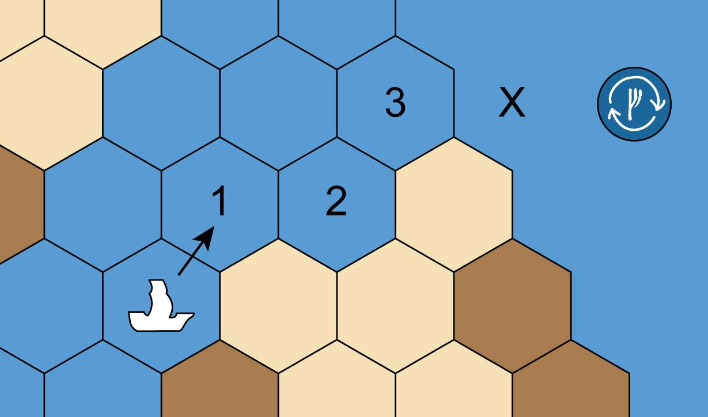
Each hex on the map may be occupied by only 3 or less units.
Developments do not count toward occupancy.
Prisoners do not count toward occupancy.
- Caravel: A small, maneuverable sailing ship with lateen sails, capable of basic attacking and defending and the most movement range of all naval units. 6 movement, value of 1
- Galleon: Large warship with powerful cannons, but slower and less sea-worthy. build limit 1, 4 movement, 3 attack range* (diminishing accuracy), value of 3
- Longship: A large, oar-powered ship primarily for transporting troops. 5 movement, +3 transport, -attack, -defend, build limit 3, value of 2
Longships can transport up to 3 land units of any type.
Longships can not attack or defend other ships or coastal buildings, but they can defend themselves like normal ships.
Archers on a longship can attack coastal hexes or enemy ships.
Archers on a longship can defend it from attacking ships.
Infantry and cavalry on a longship can not defend it from other ships.
If a longship is adjacent to a developed hex, units can be built directly on the ship.
Embarking and Disembarking longships:
Loading and unloading units from a longship to adjacent hexes is a secondary action.
Longships may pick up and or drop off land units at any point before or during its movement.
1. The longship is activated and embarks an adjacent infantry and cavalry:
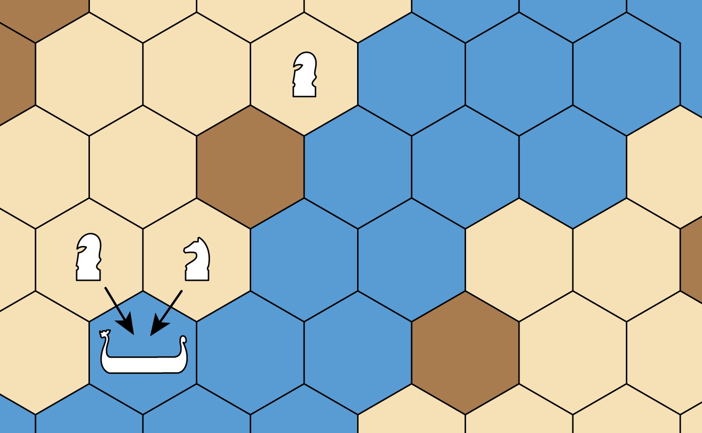
2. The longship moves 3 hexes and embarks an additional infantry:
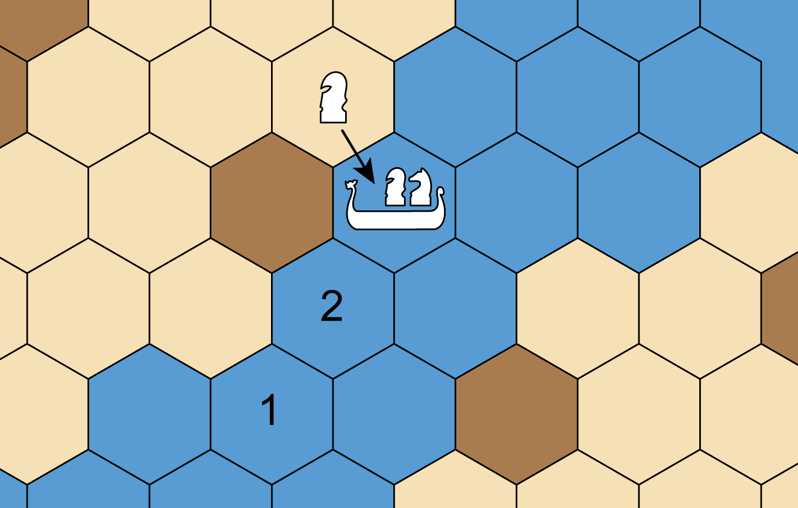
3. The longship completes its movement and disembarks all units:
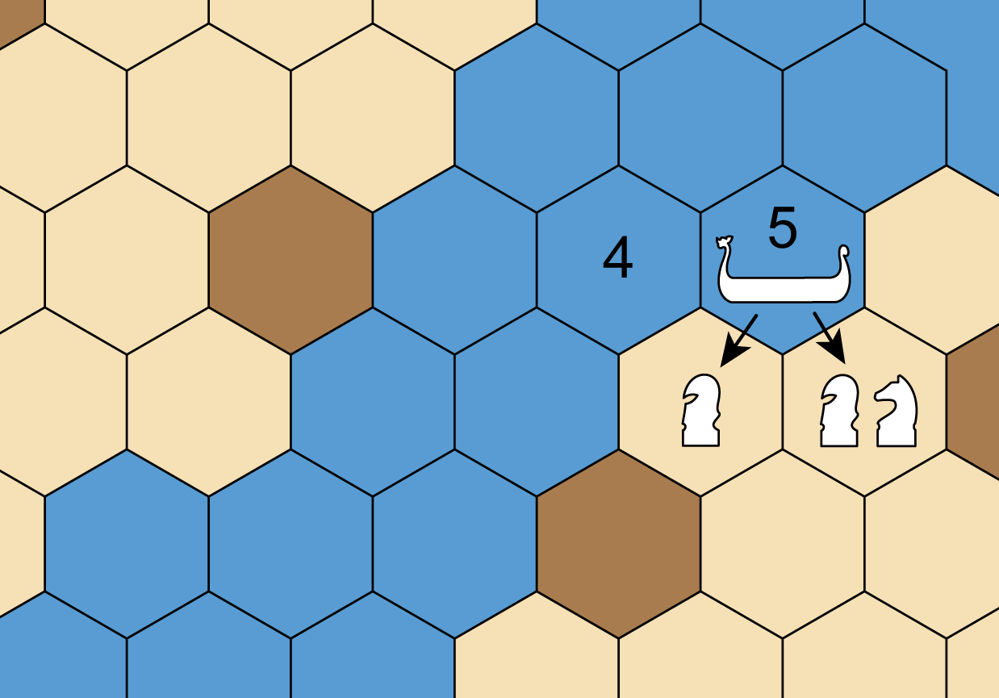
- Infantry: 3 movement, value of 1
- Archer: 2 movement, 3 attack range* (diminishing accuracy), value of 2
- Cavalry: 4 movement, value of 3
New Units are Recruited simply by paying their value in Gold.
Recruited land units are placed on or adjacent to any developed hex.
Recruited ships are placed on any sea hex adjacent to any of a player's coastal developments (in order to Recruit new ships, players must have a camp, fort or castle on the coast)
When placing Recruited units players must respect maximum occupancy rule.
Units are Activated simply by paying their value in Silver.
An activated unit can execute 3 primary actions.
Once the player has resolved a unit's actions, lay the piece on its side to denote that it has completed its actions.
Units can only be activated once per turn. At the end of the turn, reset all units to their upright position.
Each action must be unique. For example, a player may not attack thrice.
Activation and subsequent actions can occur at any point in a player's turn, but once a unit is activated the player must execute all its actions immediately or execute some and forfeit the others.
Players may not Activate more than one unit simultaneously, however there is no limit to the number of units they can Activate sequentially on their turn (provided they have enough Silver).
Units may move in any direction or combination of directions, up to a number of hexes equal to their movement range.
Units may move through hexes occupied by their own units or hexes at max occupancy, but must respect maximum occupancy rule and only end movement in an eligible hex.
Movement into a hex occupied by another player initiates a battle.
There are 2 types of attack:
- Close Combat:
Units can attack opponents in the same or adjacent hexes.
To resolve close combat attacks, both players involved roll a number of dice equal to the value of the unit participating in the battle. Compare only each player's highest die, and the greater value wins the battle. Ties must be re-rolled.
- Ranged:
Archers, Artillery and Galleons are capable of ranged attacks.
Ranged attacks can only extend in straight lines perpendicular to the center of each hex edge.
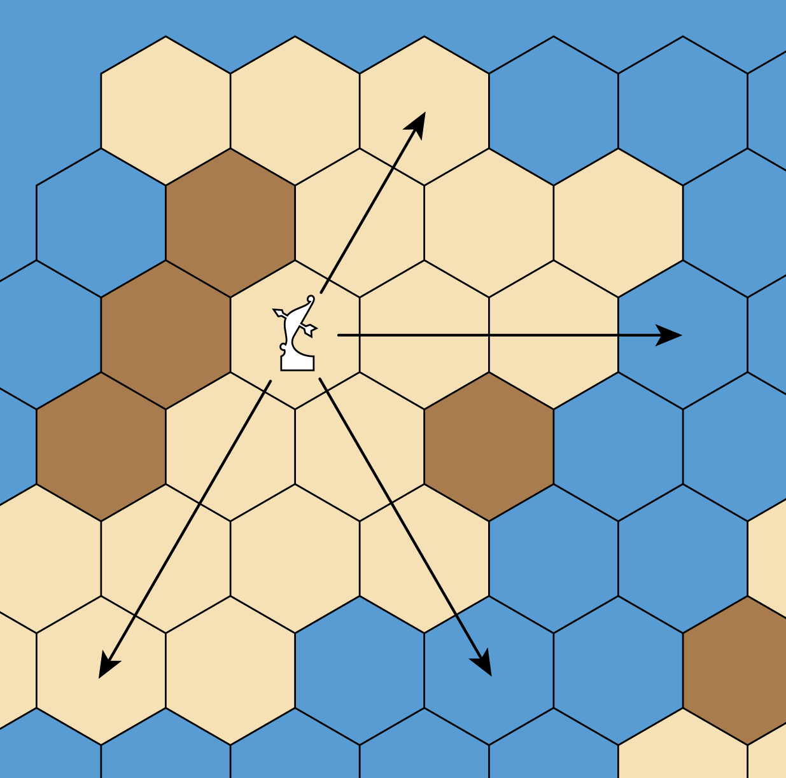
Ranged attacks are blocked by mountains and walls.
Ranged attacks can not target a hex if a closer hex in the same line of sight is occupied by opponent units.
To resolve a ranged attack, the attacker rolls a number of dice equal to the value of the unit. If any die result is 1, 2 or 3 the attack is successful.
Ranged attack accuracy decreases with range. For attacks at range 2, only a die roll of 1 or 2 is successful. At range 3, only a 1 is successful.
Restrictions:
The Active player can not attack the same player more than 3 times per turn.
Each player can not be attacked more than 6 times per round.
-
Flanking: The attacker may add 1 additional die for attacking from a flank, 2 for attacking from a rear flank, and 3 for attacking from the rear.
Feint: The 'front' of a hex is determined by the direction of the first attack. Subsequent attacks may utilize Flanking advantage.
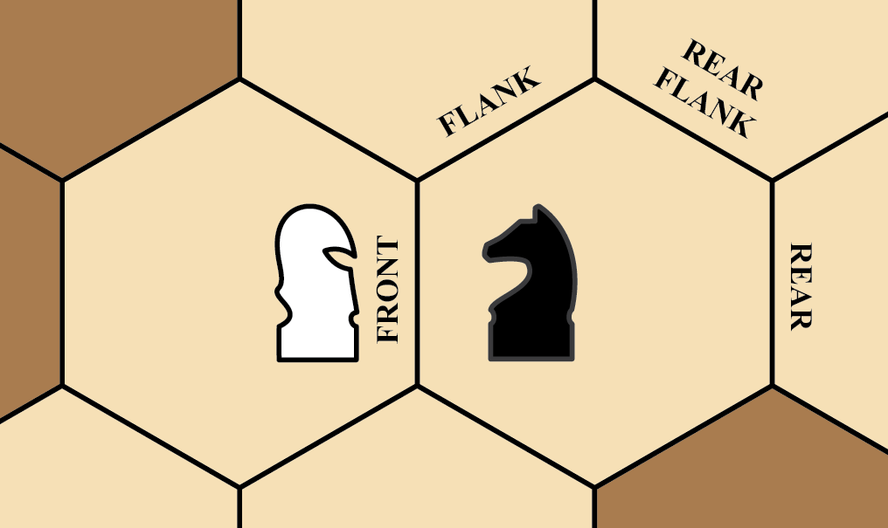
Example:
1. White to play
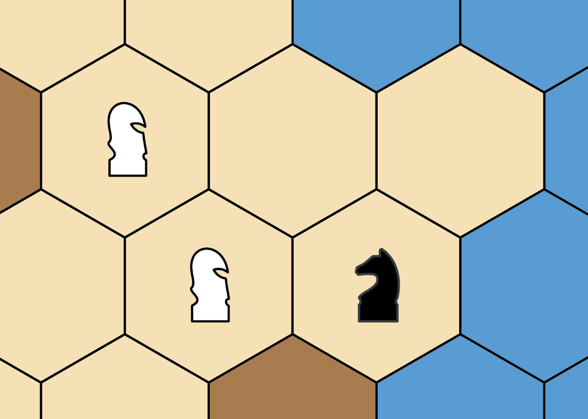
2. White infantry attacks cavalry. White rolls 1 black attack die for value of infantry vs 3 defending white dice for value of cavalry. White fails to capture.
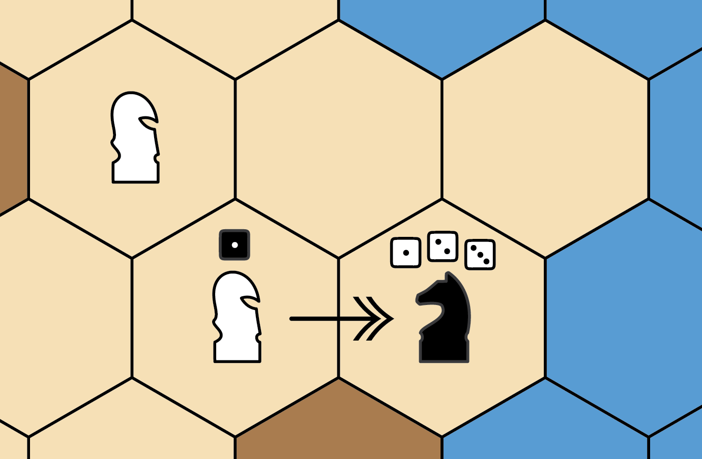
3. White infantry moves and attacks cavalry from rear flank. White rolls 1 black attack die for infantry value plus 2 attack dice for rear flank advantage.
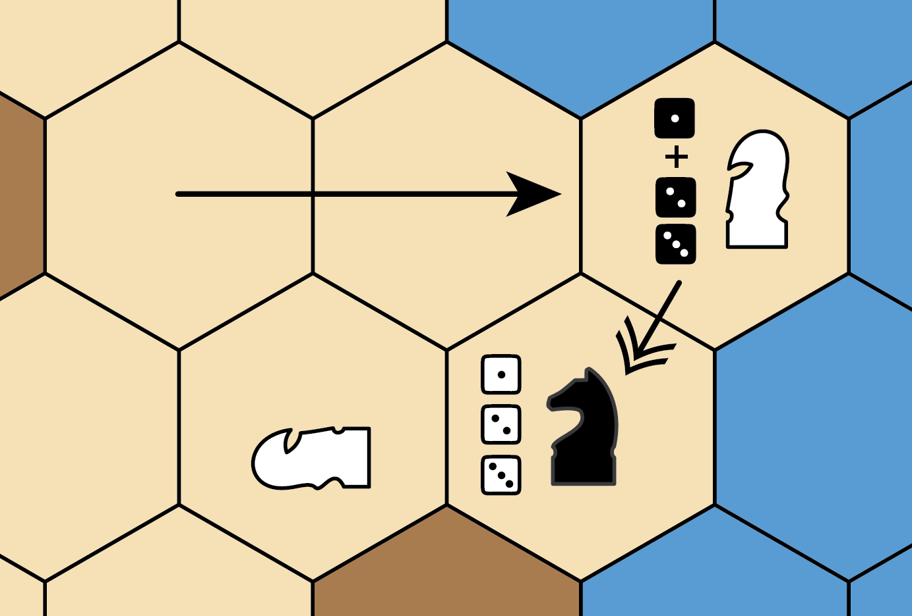
-
Attrition: The attacker may add 2 additional dice for attacking the same hex from the same direction 3 times.
-
Overwhelm: If tactical advantages increase the number of attack dice to 6 or more, the enemy is overwhelmed and surrenders before the battle.
Example
Land Victory: If the attacker wins a land battle, the defeated unit is captured. Place the captured piece on the victor's nearest developed hex. This knight is now considered a prisoner.
Sea Victory: If the attacker wins at sea, the victor sinks the loser's ship. Remove it from the board and place it in an area near him designated as his ship graveyard.
Sinking a Longship loaded with Units: If a longship loaded with units (that are not archers) is defeated in Naval battle, the victor captures all units aboard and sinks the longship. If archers are aboard, they must be defeated (and captured) prior to sinking the longship.
Example:
1. Black must first attack the archer defending the longship. Black captures white archer:
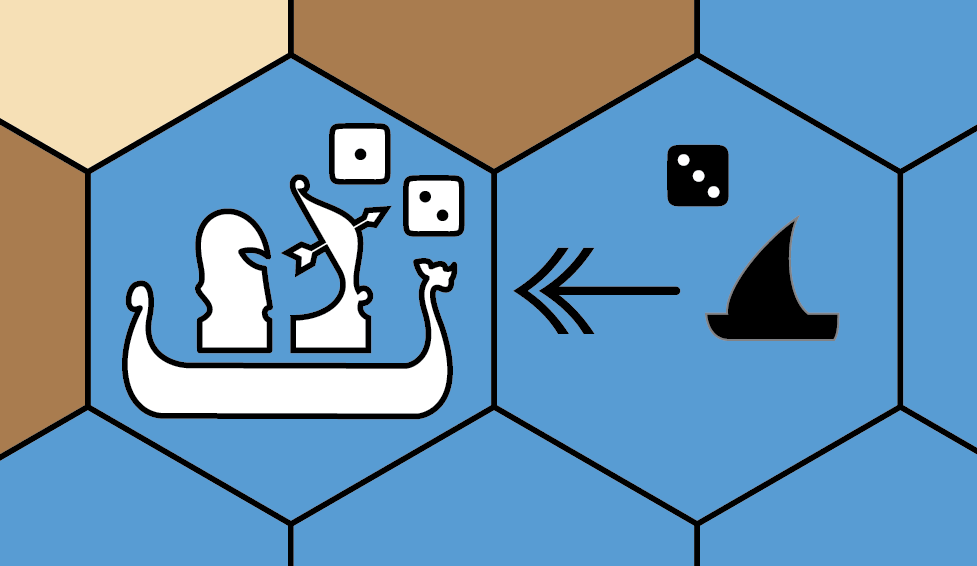
2. Black attacks again from a rear flank. White rolls 2 defense dice for value of longship. Black wins battle, sinks white longship and captures white infantry.
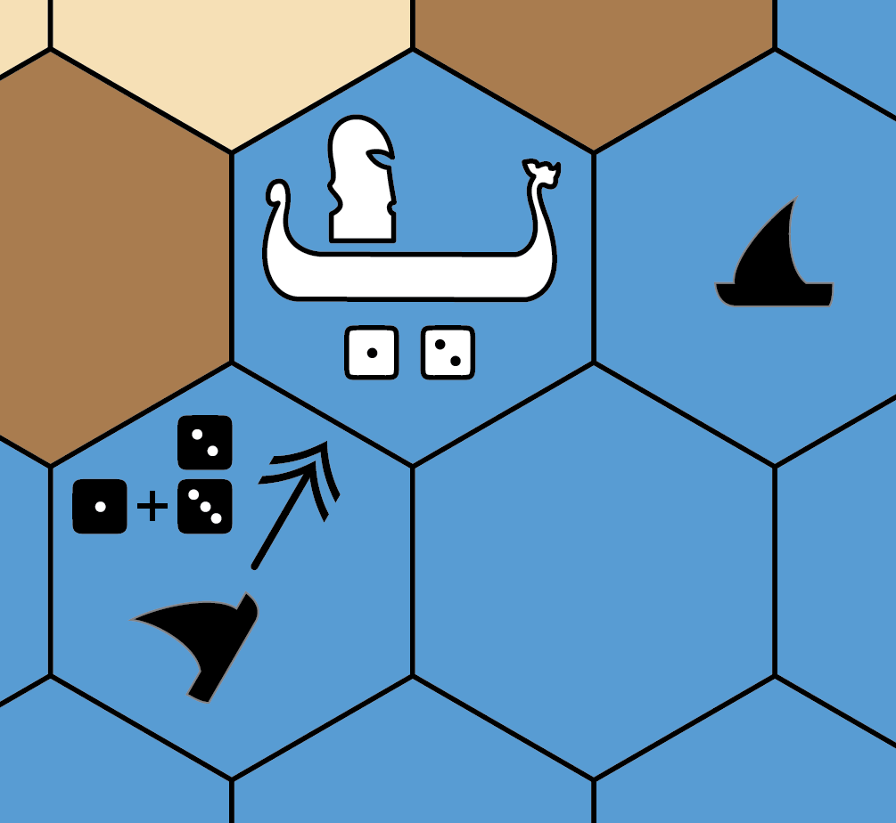
Occupation: The attacker may optionally move his victorious unit onto the hex that was attacked if no enemy units remain.
Defender Wins: If the defender wins, Units that attacked from adjacent hexes may remain where they are and no further action is taken.
Retreat: If the attacker and defender are on the same hex, and the defender wins the battle, the attacker must retreat his unit back to where it began movement.
Edge Case: If the unit is unable to retreat (due to prevailing winds) then the attacking unit will be captured by the defender. Diagram.
When a player is attacked by the active player and loses a battle or a development is seized, and his turn is not next, he may then Retaliate.
Retaliation occurs immediately after the active player has ended his turn.
Then the player who lost the battle receives his choice of 1 gold or silver for each unit lost in battle or seized development.
He may then Recruit 1 unit and / or Activate 1 unit of his choice (provided he can afford the cost).
The Activated unit does not have to be the Recruited unit, nor does the Recruited unit have to be Activated.
Restrictions:
The retaliating player may not seize any developments that were seized by the active player on his current turn.
Battles won by a retaliating player do not trigger additional retaliations.
Activated Units occupying a hex adjacent to an opponent wall may expend a primary Action to attempt to Breach.
To breach, roll a number of dice equal to the unit's value. If the result of any die is a 5 or 6 the breach is successful
Attrition applies to breaching. Upon the third attempt to breach a wall enclosing the same hex or citadel, 2 additional dice may be added.
Upon successful breach of a wall, it is removed from the board.
Ships may attempt to breach coastal walls.
Players may expend an activated unit action to seize opponent developments and artillery.
Conditions: The following must be true in order to seize:
- The seizing unit is located on or adjacent to the development to be seized
- The development to be seized is undefended
- The development to be seized has not already been seized during the current turn
Diagram.
If the development is defended, the attacking player must first defeat all defenders.
To seize a development, a player removes it from the board and replaces it with an equivalent development of their own color. He may then move the seizing unit onto the hex.
Rescue: If an opponent manages to seize a developed hex with prisoners on it, prisoners belonging to him are freed and can now be Activated. Any prisoners belonging to other players become the prisoners of the hex's new owner.
Seizing an opponents buildings rewards players with victory tokens, however seizing back buildings previously owned by the player does not award tokens.
Seizing an opponent's last development: Players are not eliminated if all of their developments are seized. In the event an opponent seizes another player's last development, the victor receives 3 victory tokens in addition to the value of the development.
Seizing Walls: Any walls on hexes that are seized by an opponent also change ownership only if there are no adjacent hexes occupied by the original owner of the wall. This is not an all or none condition. It is possible that some walls could be converted and others not. Diagram
Restrictions:
The Active player may not Seize more than 3 value of buildings of any one player in a single turn.
Players can not Seize more than 6 value of buildings from any one player in a single round.
Units may defend a development if they are located on the same hex.
Units may defend a development if they are located on a hex adjacent to both the attacker and the unit they are defending. Diagram.
Units may defend other units only if they are of higher value.
Once per turn a player may discharge any land unit, remove it from the board, Recruit a new unit of the same type, and place it on or adjacent to any developed hex.
Units may not attack or move through opponent walls, however a player's own units may move freely or attack through his own walls
Artillery units must be fired by a unit on the same hex.
Firing artillery expends the unit's attack action.
Artillery can be moved by any unit, up to the same movement range as the unit.
Artillery can be seized by an opponent if no unit is defending it.
Artillery is more effective at breaching. A roll of 3, 4, 5 or 6 is a successful breach.